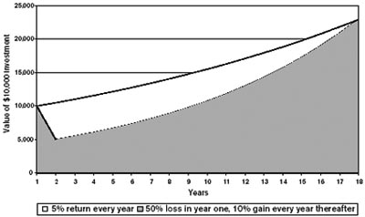
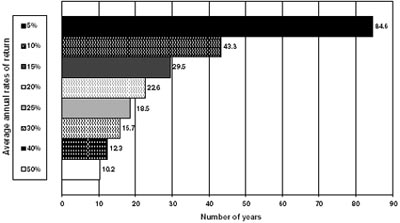

If we fail to anticipate the unforeseen or expect the unexpected in a universe of infinite possibilities, we may find ourselves at the mercy of anyone or anything that cannot be programmed, categorized, or easily referenced.
—Agent Fox Mulder, The X-Files
What is risk?
You’ll get different answers depending on whom, and when, you ask. In 1999, risk didn’t mean losing money; it meant making less money than someone else. What many people feared was bumping into somebody at a barbecue who was getting even richer even quicker by day trading dot-com stocks than they were. Then, quite suddenly, by 2003 risk had come to mean that the stock market might keep dropping until it wiped out whatever traces of wealth you still had left.
While its meaning may seem nearly as fickle and fluctuating as the financial markets themselves, risk has some profound and permanent attributes. The people who take the biggest gambles and make the biggest gains in a bull market are almost always the ones who get hurt the worst in the bear market that inevitably follows. (Being “right” makes speculators even more eager to take extra risk, as their confidence catches fire.) And once you lose big money, you then have to gamble even harder just to get back to where you were, like a racetrack or casino gambler who desperately doubles up after every bad bet. Unless you are phenomenally lucky, that’s a recipe for disaster. No wonder, when he was asked to sum up everything he had learned in his long career about how to get rich, the legendary financier J. K. Klingenstein of Wertheim & Co. answered simply: “Don’t lose.” 1 This graph shows what he meant:
FIGURE 20-1
The Cost of Loss

Imagine that you find a stock that you think can grow at 10% a year even if the market only grows 5% annually. Unfortunately, you are so enthusiastic that you pay too high a price, and the stock loses 50% of its value the first year. Even if the stock then generates double the market’s return, it will take you more than 16 years to overtake the market—simply because you paid too much, and lost too much, at the outset.
Losing some money is an inevitable part of investing, and there’s nothing you can do to prevent it. But, to be an intelligent investor, you must take responsibility for ensuring that you never lose most or all of your money. The Hindu goddess of wealth, Lakshmi, is often portrayed standing on tiptoe, ready to dart away in the blink of an eye. To keep her symbolically in place, some of Lakshmi’s devotees will lash her statue down with strips of fabric or nail its feet to the floor. For the intelligent investor, Graham’s “margin of safety” performs the same function: By refusing to pay too much for an investment, you minimize the chances that your wealth will ever disappear or suddenly be destroyed.
Consider this: Over the four quarters ending in December 1999, JDS Uniphase Corp., the fiber-optics company, generated $673 million in net sales, on which it lost $313 million. Its tangible assets totaled $1.5 billion. Yet, on March 7, 2000, JDS Uniphase’s stock hit $153 a share, giving the company a total market value of roughly $143 billion. 2 And then, like most “New Era” stocks, it crashed. Anyone who bought it that day and still clung to it at the end of 2002 faced these prospects:
FIGURE 20-2
Breaking Even Is Hard to Do

If you had bought JDS Uniphase at its peak price of $153.421 on March 7, 2000, and still held it at year-end 2002 (when it closed at $2.47), how long would it take you to get back to your purchase price at various annual average rates of return?
Even at a robust 10% annual rate of return, it will take more than 43 years to break even on this overpriced purchase!
Risk exists in another dimension: inside you. If you overestimate how well you really understand an investment, or overstate your ability to ride out a temporary plunge in prices, it doesn’t matter what you own or how the market does. Ultimately, financial risk resides not in what kinds of investments you have, but in what kind of investor you are. If you want to know what risk really is, go to the nearest bathroom and step up to the mirror. That’s risk, gazing back at you from the glass.
As you look at yourself in the mirror, what should you watch for? The Nobel-prize–winning psychologist Daniel Kahneman explains two factors that characterize good decisions:
To find out whether your confidence is well-calibrated, look in the mirror and ask yourself: “What is the likelihood that my analysis is right?” Think carefully through these questions:
Next, look in the mirror to find out whether you are the kind of person who correctly anticipates your regret. Start by asking: “Do I fully understand the consequences if my analysis turns out to be wrong?” Answer that question by considering these points:
You should always remember, in the words of the psychologist Paul Slovic, that “risk is brewed from an equal dose of two ingredients—probabilities and consequences.” 4 Before you invest, you must ensure that you have realistically assessed your probability of being right and how you will react to the consequences of being wrong.
The investment philosopher Peter Bernstein has another way of summing this up. He reaches back to Blaise Pascal, the great French mathematician and theologian (1623–1662), who created a thought experiment in which an agnostic must gamble on whether or not God exists. The ante this person must put up for the wager is his conduct in this life; the ultimate payoff in the gamble is the fate of his soul in the afterlife. In this wager, Pascal asserts, “reason cannot decide” the probability of God’s existence. Either God exists or He does not—and only faith, not reason, can answer that question. But while the probabilities in Pascal’s wager are a toss-up, the consequences are perfectly clear and utterly certain. As Bernstein explains:
Suppose you act as though God is and [you] lead a life of virtue and abstinence, when in fact there is no god. You will have passed up some goodies in life, but there will be rewards as well. Now suppose you act as though God is not and spend a life of sin, selfishness, and lust when in fact God is. You may have had fun and thrills during the relatively brief duration of your lifetime, but when the day of judgment rolls around you are in big trouble. 5
Concludes Bernstein: “In making decisions under conditions of uncertainty, the consequences must dominate the probabilities. We never know the future.” Thus, as Graham has reminded you in every chapter of this book, the intelligent investor must focus not just on getting the analysis right. You must also ensure against loss if your analysis turns out to be wrong—as even the best analyses will be at least some of the time. The probability of making at least one mistake at some point in your investing lifetime is virtually 100%, and those odds are entirely out of your control. However, you do have control over the consequences of being wrong. Many “investors” put essentially all of their money into dot-com stocks in 1999; an online survey of 1,338 Americans by Money Magazine in 1999 found that nearly one-tenth of them had at least 85% of their money in Internet stocks. By ignoring Graham’s call for a margin of safety, these people took the wrong side of Pascal’s wager. Certain that they knew the probabilities of being right, they did nothing to protect themselves against the consequences of being wrong.
Simply by keeping your holdings permanently diversified, and refusing to fling money at Mr. Market’s latest, craziest fashions, you can ensure that the consequences of your mistakes will never be catastrophic. No matter what Mr. Market throws at you, you will always be able to say, with a quiet confidence, “This, too, shall pass away.”